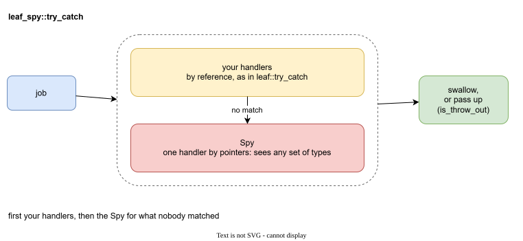

leaf_spy¶
leaf_spy is the solution to what the previous pages wanted. It is a small header-only wrapper around Boost.LEAF. It gives you one function, try_catch.

try_catch is leaf::try_catch plus one more handler, the Spy:
- First your handlers try, by reference, exactly as in
leaf::try_catch. - If none of them matched, the Spy gets the exception. The Spy is the catch-all handler by pointers from the previous page, moved into one reusable object. It sees any set of types.
- A flag,
is_throw_out, says whether the exception stays insidetry_catchor goes up.
What you get¶
- The list of marks lives in one place. The Spy is a small struct. Its
operator()lists the marks, and the compiler checks that every one is a pointer. - A catch-all that is always last. You do not have to order handlers by hand. The Spy runs only when no other handler matched.
- A clear decision what leaves. A handler can swallow the exception, pass the original up with
throw;, or throw a new one.is_throw_outturns all of these on or off at once. - Threads.
captured_leaf_exceptioncarries the marks from a worker thread to the thread that catches.
Where to read next¶
| If you want to... | Read |
|---|---|
| build it and run the first program | Getting started |
| print or log the marks of any exception | The spy handler |
| catch some exceptions yourself | Direct handlers |
| use it with threads | Threads |
| use it in unit tests | Testing |
| look up an exact signature | Reference |